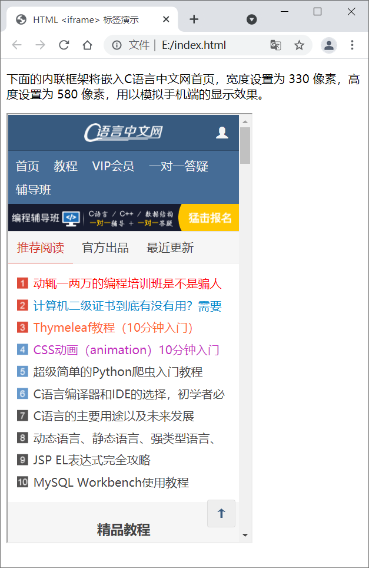
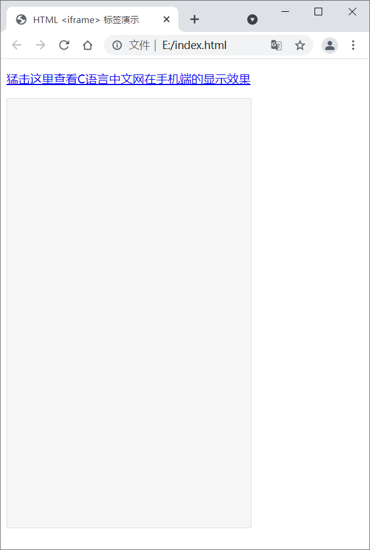
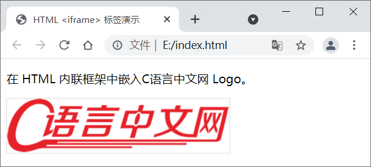

HTML <iframe>标签：内联框架
HTMl <iframe> 标签用来定义一个内联框架，使用它可以将另一个网页嵌入到当前网页中。<iframe> 标签会在网页中定义一个矩形区域，浏览器可以在这个区域内显示另一个页面的内容。
<iframe> 标签的语法格式如下：
点击链接，即可在灰色板块中打开C语言中文网首页。
注意，要想实现上述效果，需要为 <iframe> 标签设置 name 属性，并将 <a> 标签中 target 属性的值设置为 name 属性的值。
嵌入其它资源时，需要将 <iframe> 标签的 src 属性设置为资源地址。
<iframe> 标签的语法格式如下：
<iframe src="url" width="m" height="n"></iframe>
src 属性用来指定要嵌入的网页的地址；width 和 height 属性用来指定框架的宽度和高度，默认单位是像素，当然您也可以使用百分比。HTML <iframe> 标签不利于搜索引擎抓取页面内容，对 SEO 具有负面效果，在现代 Web 设计中不建议使用。
下表列举了 <iframe> 标签的所有属性：| 属性 | 值 | 描述 |
|---|---|---|
| align | left、right、top、middle、bottom | HTML5 不支持，HTML 4.01 已废弃。设置如何来对齐 <iframe>。 |
| frameborder | 1、0 | HTML5 不支持。设置是否显示 <iframe> 周围的边框。 |
| height | 像素 | 设置 <iframe> 的高度。 |
| longdesc | URL | HTML5 不支持。设置一个页面，该页面中包含了有关 <iframe> 的描述。 |
| marginheight | 像素 | HTML5 不支持。设置 <iframe> 的顶部和底部的边距。 |
| marginwidth | 像素 | HTML5 不支持。设置 <iframe> 的左侧和右侧的边距。 |
| name | text | 设置 <iframe> 的名称。 |
| sandbox | ""、allow-forms、allow-same-origin、allow-scripts、allow-top-navigation | 对 <iframe> 的内容定义一系列额外的限制。 |
| scrolling | yes、no、auto | HTML5 不支持。设置是否在 <iframe> 中显示滚动条。 |
| seamless | seamless | 让 <iframe> 看起来像是父文档中的一部分（即没有边框和滚动条）。 |
| src | URL | 设置要在 <iframe> 中显示的文档地址（URL）。 |
| srcdoc | HTML 代码 | 设置 <iframe> 中要显示的内容，该属性会覆盖 src 属性。 |
| width | 像素 | 设置 <iframe> 的宽度。 |
HTML <iframe> 示例
下面的几个实例演示了 <iframe> 标签的使用。示例1
为内联框架设置高度和宽度。
<!DOCTYPE html>
<html lang="en">
<head>
<meta charset="utf-8">
<title>HTML <iframe> 标签演示</title>
</head>
<body>
<p>下面的内联框架将嵌入C语言中文网首页，宽度设置为 330 像素，高度设置为 580 像素，用以模拟手机端的显示效果。</p>
<iframe src="http://c.biancheng.net/" width="330" height="580"></iframe>
</body>
</html>
显示效果：

示例2
在 <iframe> 中打开指定页面。
<!DOCTYPE html>
<html lang="en">
<head>
<meta charset="utf-8">
<title>HTML <iframe> 标签演示</title>
<style type="text/css">
#myframe{
border: 1px solid #ddd;
background-color: #f6f6f6;
}
</style>
</head>
<body>
<p><a href="http://c.biancheng.net/" target="myframe">猛击这里查看C语言中文网在手机端的显示效果</a></p>
<iframe id="myframe" name="myframe" width="330" height="580"></iframe>
</body>
</html>
显示效果：

点击链接，即可在灰色板块中打开C语言中文网首页。
注意，要想实现上述效果，需要为 <iframe> 标签设置 name 属性，并将 <a> 标签中 target 属性的值设置为 name 属性的值。
示例3
<iframe> 标签除了可以嵌入网页，还可以嵌入图片、视频等其它资源，嵌入的图片可以直接在当前页面上显示，嵌入的视频可以直接在当前页面上播放。请看下面的代码：
<!DOCTYPE html>
<html lang="en">
<head>
<meta charset="utf-8">
<title>HTML <iframe> 标签演示</title>
</head>
<body>
<p>在 HTML 内联框架中嵌入C语言中文网 Logo。</p>
<iframe src="./logo.png" width="300" height="73" scrolling="no" style="border:1px solid #ddd;"></iframe>
</body>
</html>
运行效果：

嵌入其它资源时，需要将 <iframe> 标签的 src 属性设置为资源地址。
关注公众号「站长严长生」，在手机上阅读所有教程，随时随地都能学习。内含一款搜索神器，免费下载全网书籍和视频。

微信扫码关注公众号